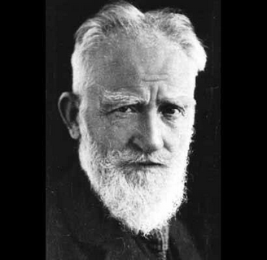

George Bernard Shaw (1856-1950)

Ýrlanda asýllý yazar, eleþtirmen ve düþünce adamýdýr. Yazdýðý deneme, eleþtiri, komedilerle çaðdaþ edebiyat ve siyasete önemli katkýlarda bulunmuþtur. Ýnsanlarýn olaylarý ayný biçimde görebilmesini saðlamak için bazý düþüncelerini komediler halinde yazarak aktarmaya çalýþmýþtýr. Yazdýðý bazý eserleri tiyatroya uyarlanarak sahnelenmiþtir. Birici Dünya Savaþý sýrasýnda barýþý savunan çýkýþlarýyla dikkatleri üzerine çekmiþtir. Bu savaþta Almanlar kadar Ýngiltere ve yandaþlarýnýn da suçlu olduðunu dile getirmesinden dolayý eleþtirilere hedef olmuþtur. 1925 yýlýnda kendisine Nobel Edebiyat Ödülü verilmiþ, ancak o bu ödülü reddetmiþtir. Risale-i Nur'da, Peygamber Efendimiz (asm) ile ilgili övgü dolu ifadelerine yer verilmiþtir.Shaw, 1856 yýlýnda, Ýrlanda'nýn Dublin þehrinde, yoksul bir ailenin çocuðu olarak dünyaya geldi. Klasik eðitimine baþladýysa da bir süre sonra okuldan ayrýlarak eðitimin yarým býrakmak zorunda kaldý ve bir emlak komisyoncusunun yanýnda çalýþmaya baþladý. Bir süre sonra annesi ile birlikte Dublin'den ayrýlarak Londra'ya geçti. Yarým kalan eðitimini tamamlamak için British Museum kütüphanesinden istifade etmeye ve bu yolla kendi kendine eðitimini tamamlamaya çalýþtý. Kendini yetiþtirmek maksadýyla konferanslarý takip ederek muhtelif tartýþmalara katýldý. Bu arada geçimini saðlamak için de yazmaya baþladý. Ancak, ilk roman denemelerinde baþarýlý olamadý.
Shaw, siyasete ilgi duyduðundan bu alanla ilgilenmeye baþladý. Kapitalizmin sebep olduðu toplumsal çekiþme, sermayenin belirli ellerde toplanmasý, kendi menfaatlerini toplumun zararýnda gören anlayýþ hüküm sürmekteydi. Bir kýsým düþünürler gibi o da, buna tepki olarak doðan Sosyalizmin etkisinde kaldý. Yönetimde bazý reformlarýn yapýlmasý gerektiðini ve sermayenin devletleþtirilmesini savundu. Bu çalýþmalarýný sürdürürken usta bir konuþmacý ve polemikçi olarak dikkat çekmeye baþladý. Diðer taraftar yazarlýðýný da devam ettirerek, oyun yazmaya baþladý.
Shaw, Fabian Derneði'nin kurucularý arasýnda yer aldý (1884). Bu derneðin amacý, kapitalizmin adil olmayan sonuçlarýný düzeltmek maksadýyla devletin müdahalesini temin etmekti. Ancak Marksizm'in devrimci anlayýþýna aykýrý olarak tedrici düzeltmelerle durumun iyileþtirilmesini istiyorlar ve bunu liberalizmin doðal sonucu olarak görüyorlardý. Onlara göre, yoksullarýn durumunu düzeltmek için devletin müdahalesi gerekirdi. Günde 8 saat çalýþma, yaþlýlýk aylýðý, fakirlere iyi konut ve eðitim hakký saðlanmasý gibi pratik önerilerde bulunuyorlardý. Amaçlarý kapitalizmin bencil ve acýmasýz tiranlýðýndan ezilenleri kurtarmaktý. Ýdeolojik taleplerden öte, somut önerilerde bulunuyorlardý (Aytekin Yýlmaz; Çaðdaþ Siyasal Akýmlar, Vadi Yay. Ýstanbul 2001, s. 60).
Shaw, güzel sanatlar, müzik ve tiyatro ile de ilgilendi. 1885 yýlýndan itibaren muhtelif gazete, dergi ve kitaplarda fikir ve eleþtirilerini yayýnladý. Yazýlarýyla geniþ kitlelere ulaþmak istiyordu. Bunu saðlamanýn iyi bir yolu da komediydi. Nitekim o da komedi yazmaya baþladý. Yazdýðý oyunlarý 1892 yýlýndan itibaren sahnelenmeye baþlandý. Oyunlarýný sade, anlaþýlýr ve eðlenceli bir dille kaleme aldý. Yazdýðý tiyatro denemelerinde; Londra'nýn kenar mahallelerinde fakir ve kimsesizlere ev kiralayan kimselerin yaptýklarý haksýzlýklarý dile getirdi. Bunun yanýnda toplumun deðiþik kesimlerinde bunlara benzer çarpýklýklara da dikkat çekti. Bu eserleriyle çok kýsa süre zarfýnda meþhur oldu. 1904 yýlýnda Londra'da VII. Edward için özel olarak düzenlenen bir gösteride "John Bull'un Öbür Adasý" adlý oyunu sahnelendi. Bu geliþme ününü perçinledi.
Shaw, milyonlarca insanýn hayatýna mal olan Birinci Dünya Savaþýna karþý çýktý. Bu savaþta en az Almanlar kadar Ýngiltere ve müttefiklerinin de suçlu olduðunu açýk bir ifade ile dile getirdi. Barýþ görüþmelerinin bir an önce baþlamasýný istedi ve bu amaçla bir broþür yayýnladý. Tepkilere hedef olmasýna raðmen savaþ aleyhtarlýðýný devam ettirdi. "Kýrgýnlar Evi" adlý eserinde, savaþýn hemen öncesinde, bir kýr evinde cereyan eden ve savaþýn sorumlusu olan kuþaðýn manevi iflasýný göz önüne getirdi. Bu eseri 1920 yýlýnda sahnelendi.
Shaw, 1925 yýlýnda kendisine verilen Nobel Edebiyat Ödülünü kabul etmedi. Ömrünün sonuna kadar, geleneksel Batýlý deðerleri reddetmeyi sürdürdü. Sahnelenen eserlerinde, toplumda geçerli olan inanç ve deðerleri hiçe sayarak açýkça cephe aldý. Avrupa'da, tahrif edilen dini inanç ve tutuculuða karþý gelmekten çekinmedi. Kendinden sonra gelen kuþaklarýn kültürel ve siyasi düþüncelerinin þekillenmesinde çalýþmalarýnýn büyük tesiri oldu. 2 Kasým 1950 tarihinde öldü.
Shaw'ýn, Batýdaki geleneksel deðerlere karþý çýkýþý inançsýzlýðýndan öte, mevcut kokuþmuþluða ve yozlaþmaya tepkiydi. Ýslamiyet ve Hz. Peygamber hakkýndaki görüþleri ve düþünceleri ise çok farklý bir mahiyet arzetmekteydi. Risale-i Nur'da bu konudaki görüþlerine yer verilmekte ve kahraman filozof olarak kendisinden söz edilmektedir:
"Din-i Muhammedi'nin (a.s.m.) en yüksek makam-ý takdire çýkmasýnýn sebebi, gayet acip ve saðlam bir hayatý temin etmesidir. Bana açýlan budur ki, o din tek, yekta, emsalsiz bir din-i ferid olup, bütün muhtelif ayrý ayrý hayatýn envarlarýný ve çeþitlerini hazmettiriyor. Yani ýslâh ve istihale tarzýnda tasfiye ve terakki ettiriyor. Hem Muhammed'in (a.s.m.) dini öyle bir dindir ki, insanýn ayrý ayrý bütün milletlerini kendine celb edebilir.
"Ben görüyorum ve itikat ediyorum ki, beþere vacibdir ki, desin Muhammed (a.s.m.) insaniyetin halaskârýdýr ve halaskârlýk nâmý ona verilmek lâzýmdýr. Ben itikat ediyorum ki; Muhammed'in (a.s.m.) misli, yani siretinde, tarzýnda bir âdem þimdiki yeni âleme reis olsa, hükmetse, bu yeni âlemin müþkilatýný halledip; bu yeni karmakarýþýk âlemde müsalemet-i umumiyeye ve saadet-i hayatýn husulüne sebep olacak." (Mektubat, s. 210)
Shaw, 1935 yýlýnda Afrika'da Mombasa þehrinde, Muhammed Abdülalim Sýddýki el-Kaderi ile aralarýnda geçen görüþmede dikkat çekici ifadeler yer vermektedir: "Gerçekten Ýslam Peygamberine büyük bir hürmet duyuyorum. Ve pek iyi bir þekilde anlayabiliyorum ki, okuma yazmasý olmayan, cahil, kaba bir ýrký, düþük moral deðerleri olan insanlarý, yüksek deðerlere sahip, hak ve hukuk peþinde koþan insanlar haline getirme iþi, Cehennem gibi korkutucu, Cennet gibi mükafat vaat edici tasavvurlar olmadan mümkün olamazdý. Kur'an'ýn kuvvetli ve vurucu belagatine de hayran olmamak elde deðil. Masum çocuklarýný diri diri topraða gömen veya öldürenlere Kur'an'ýn sorduðu þu soru ne kadar anlamlýdýr: 'Hangi suçundan dolayý öldürdün?' Benim görüþüme göre Ýslam, bu halký, insanlarý kurtarmanýn en etkin yolu olsa gerek" (Muhammed Abdülalim Sýddýki el-Kaderi; Batý, Ýslam'ý Anlamaya Çalýþýyor, Tercüme: M. Ferid Edibali, Otað Yay., Ýstanbul 1984, s. 27).
Bernard Shaw'ýn aralarýnda Türkçe'ye tercüme edilenlerin de bulunduðu eserlerinden bazýlarý þunlardýr: Silahlar ve Kahraman, Kandida, Ýnsan, Üstün Ýnsan, Prütinler Ýçin Üç Oyun, Þeytanýn Çömezi, Caesar'la Kleopatra, John Bull'un Öbür Adasý, Binbaþý Barbara, Doktorun Hatasý, Genç Bir Bayana Sosyalizm ve Kapitalizm Üzerine Öðütler, Bir Çuval Ýncir, Milyoner Kadýn, Geneva, Zoraki Masallar.